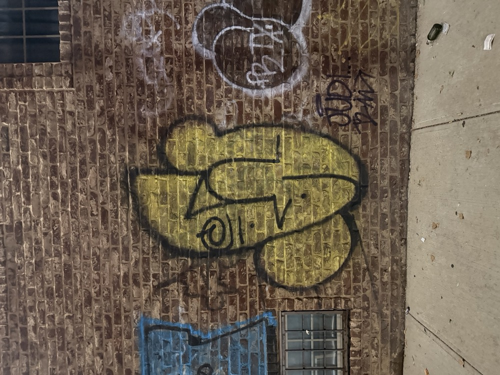
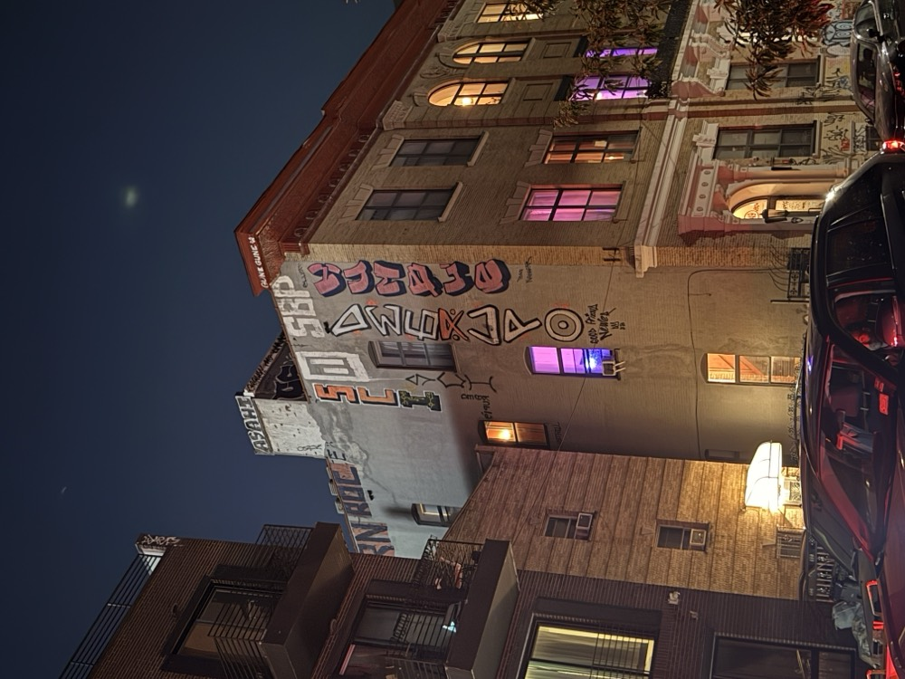
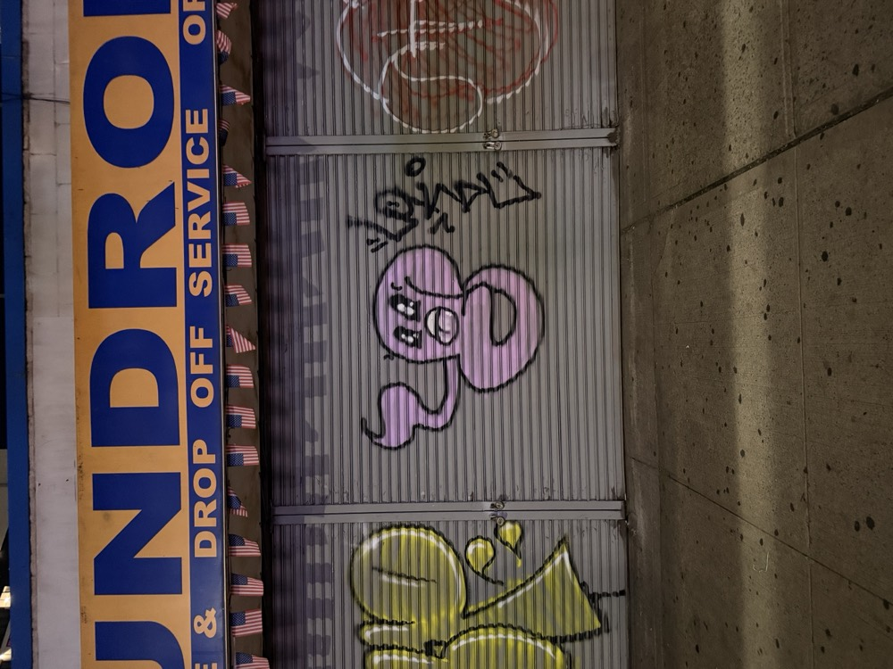
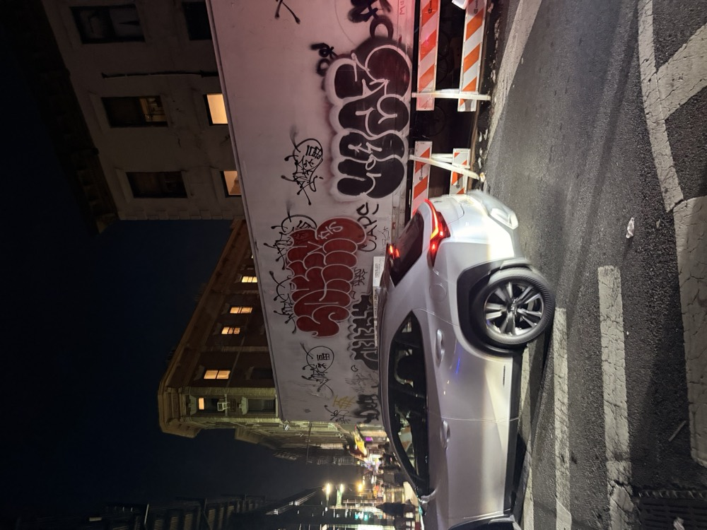

History of
Graffiti
NYC graffiti began in the late 1960s and early 1970s with tagging, where writers used markers and spray paint to create quick, recognizable signatures on walls, buildings, and subway cars. As more artists began experimenting, tags developed into throw-ups and bubble letters—larger, rounded forms designed to cover more space while still being completed quickly.
By the late 1970s, graffiti became increasingly complex with the development of Wild Style. This style used interlocking letters, arrows, extensions, sharp angles, and overlapping forms, turning simple names into elaborate visual compositions. Graffiti also evolved into larger pieces, or “masterpieces,” which allowed artists to experiment with color, outlines, shadows, highlights, backgrounds, and three-dimensional effects. Subway cars became an important canvas, allowing these works to travel throughout the city.
During the 1980s, artists began incorporating characters, cartoons, portraits, and other imagery alongside traditional lettering. Styles such as blockbuster lettering emphasized large, simple shapes, while other artists focused on detailed, colorful, and highly technical pieces. By the 1990s and 2000s, graffiti expanded into murals, stencils, photorealism, and street art, blurring the boundaries between graffiti and other forms of public art.
Today, NYC graffiti combines traditional tags, throw-ups, Wild Style, pieces, characters, and murals with newer influences from graphic design, fashion, and digital media. What began as simple handwritten signatures has developed into a complex visual language based on lettering, scale, color, composition, and personal style. Rather than being one single style, NYC graffiti continues to evolve as artists reinterpret the techniques and visual language of earlier generations.